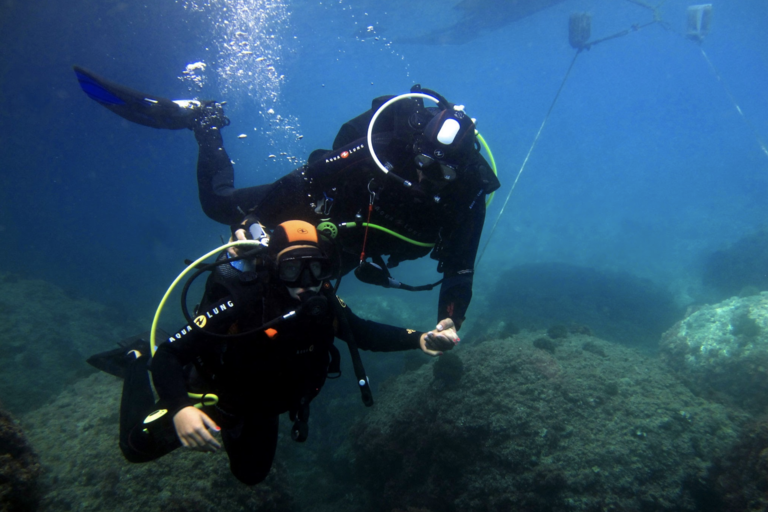

Servei · Montgrí
Submarinisme al Parc Natural del Montgrí, les Illes Medes i el Baix Ter. Submergeix-te en un espai protegit únic al Mediterrani. Oferim batejos de submarinisme, pels que volen viure una…